Not Armond White’s Film Roundup
Snowpiercer
Directed by Bong Joon-ho
Starring Chris Evans, Song Kang-ho, Tilda Swinton, Octavia Spencer, John Hurt, Jamie Bell, Ed Harris
Armond WhiteChaotic, unsophisticated paean to fake-tough military stoicism and pseudo-populist martyrdom that exploits eschatological post-9/11 class paranoia to lend faux solemnity to this glum, calculated wallow in cheap anarchy, as if middlebrow journeyman Bong Joon-ho had studied the au courant deconstruction of po-mo liberal ideology in the extraordinary, convulsive The Human Centipede II (Full Sequence), only to discard its inspired poetic essentialism in favor of swaggering machismo and hollow philosophizing.
Transformers: Age of Extinction
Directed by Michael Bay
Starring Mark Wahlberg, Stanley Tucci
Armond WhiteMichael Bay’s visually rapturous symphony of geometric sensuality moves with ineluctable narrative momentum through a luminous Cubist maze that is as conceptually daring as it is esthetically extravagant. Deceptively whimsical, film evokes mythological anamnesis with the naive forthrightness entirely absent from Children of Men, Alfonso Cuarón’s lethargic, patronizing extravaganza of faux-mystical fanboy cynicism.
They Came Together
Directed by David Wain
Starring Paul Rudd, Amy Poehler
Armond WhiteSnarktastic parody trades authentic truths for manic, glibly cynical amalgam of cinematic tropes, masking its fumbling vulgarity with rank, calculated cuteness. Shill critics will doubtless champion this committee-drawn checklist of recognizable, audience-tested romcom set-pieces, with nary a nod to film’s true inspiration, the authentically whimsical Deuce Bigalow: European Gigolo.
Begin Again
Directed by John Carney
Starring Mark Ruffalo , Keira Knightley, Hailee Steinfeld
Armond WhiteExuberant pop culture virtuoso Adam Levine is tragically wasted in this hoary, cynical throwback to pre-9/11 indie romanticism, whose manic, cartoonish hyperactivity constructs a tower of juvenile, test-marketed schmaltz that inevitably disintegrates into a jumble of musicalized self-pity. Glib, ludicrous melodrama that cribs the bravado but not the authentic emotional conviction of the magnificent Step Up 2: The Streets.
The Last Sentence
Directed by Jan Troell
Starring Jesper Christensen, Pernilla August
Armond WhiteCynical, indulgent and lifeless film that sentimentalizes its own hipster bleak-chic affectations. Nihilistic nonsense devoid of the warmth and complex emotional textures of the far superior Grown Ups 2.
Whitey: United States of America v. James J. Bulger
Directed by Joe Berlinger
Armond WhiteUnfocused spectacle of self-aggrandizement and cheap moralism shamelessly trumpets liberal journo sanctimony with hackneyed, narcissistic sensitivity. Berlinger is a stranger to the intellectual honesty and sentiment-free objectivity Rick de Oliveira achieves in The Real Cancun.
Drones
Directed by Tonje Hessen Schei
Armond WhiteTrite, condescending propaganda pays lip service to bleeding-heart liberal handwringing over American digital-age hegemony, while indulging in corn-pone neocon fantasies of Bush-era triumphalism far more authentically documented in the brilliant, kinesthetic Punisher: War Zone.
The Internet’s Own Boy: The Story of Aaron Swartz
Directed by Brian Knappenberger
Armond WhiteHipster do-gooder sentimentality reaches its inevitable postadolescent apex with this solipsistic hagiography, elevating dreary pseudo-spiritual self-pity to apocalyptic proportions. Unbearably overwrought wallow in parochial, commercialized nihilism designed to stroke the egotistic self-romanticization of Internet era digital elite idiots, who rejected the far more incisive and less insufferably precious cultural critique of What to Expect When You’re Expecting.
These 8 Cute Kittens Will Distract You Momentarily From the Unending Horror of Being Alive
Can you look at this adorable face and still worry about saving for retirement? I doubt it!
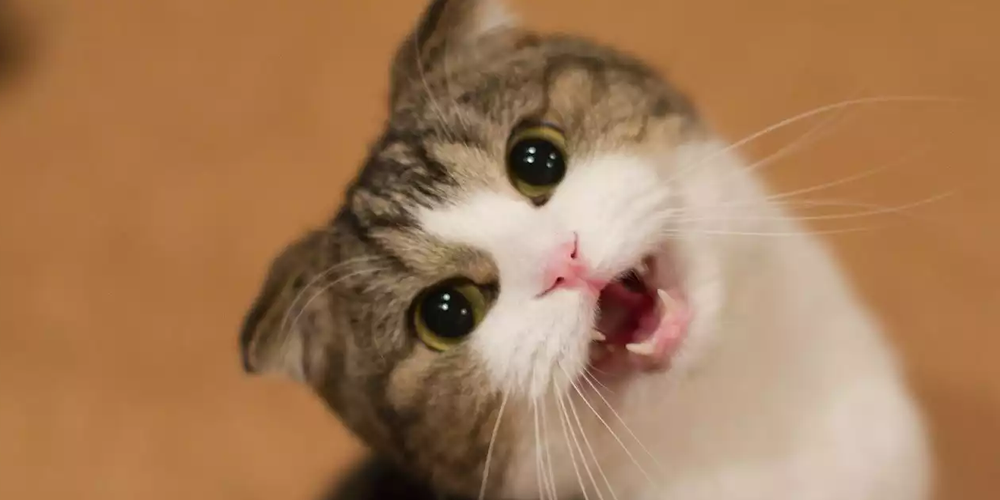
You can bet this guy isn’t staring into an unknowable future he’s powerless to control.
Worried about the results of her latest blood tests? Not this li’l cutie!
This fuzzy kitteh has never known so much as a harsh word, let alone the constant fear of a catastrophic loss of income!
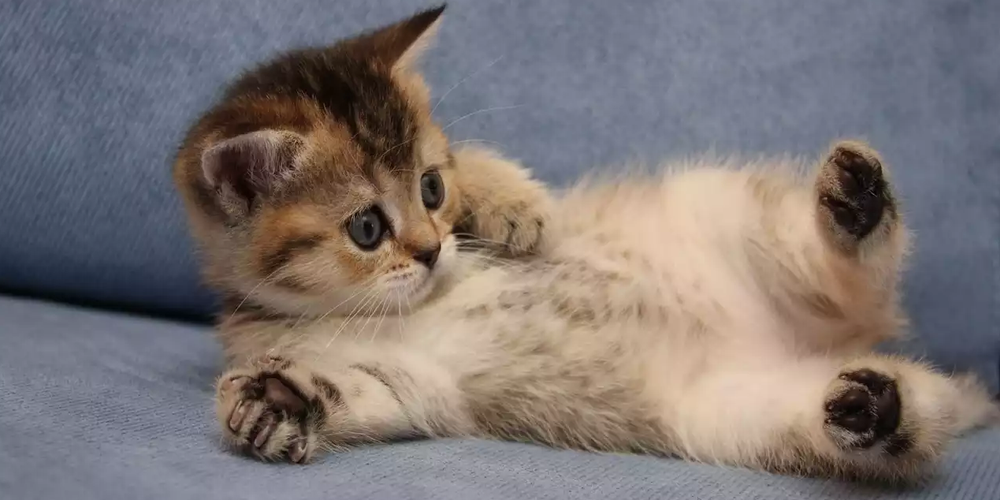
Here’s one happy scamp! And why not, since kittens have no conception of their own death.
What’s this cutie looking at? Probably not at the likely prospect of ending up working as a Walmart greeter in your 80s just to pay for groceries (that you buy at Walmart).
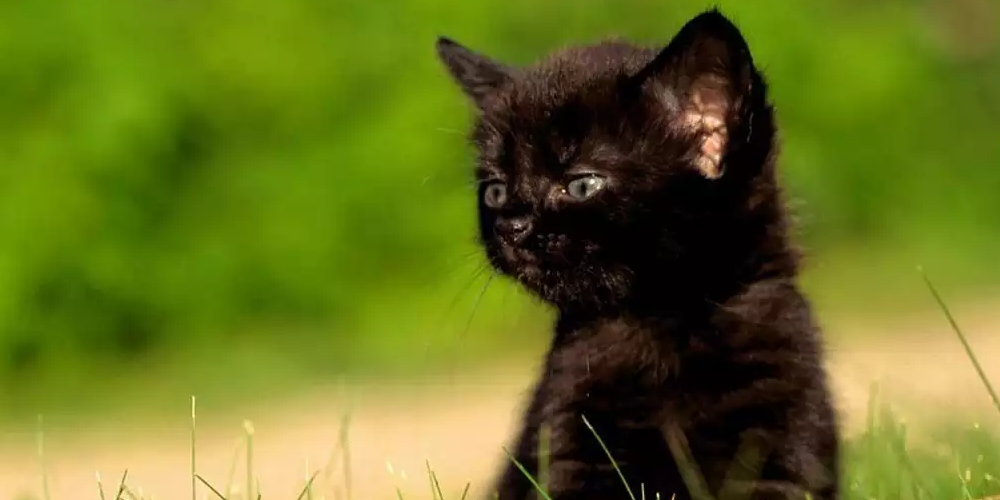
Rest easy, little one. Let mommy and daddy worry about being upside down on their mortgage.
Considering that 300 of every 100,000 people develop cancer every year, it’s a fool’s hope that you’ll be one of the lucky ones. Not that this charming scoundrel knows or cares!

Quiz: Which Cut of Steak Are You?
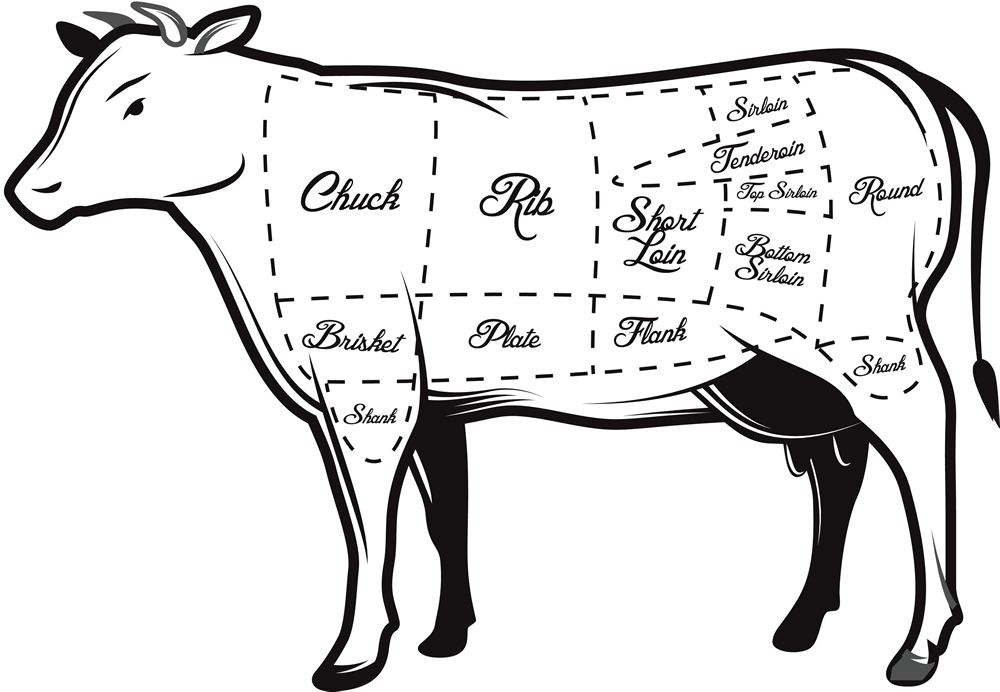
You Are a Bone-In Ribeye
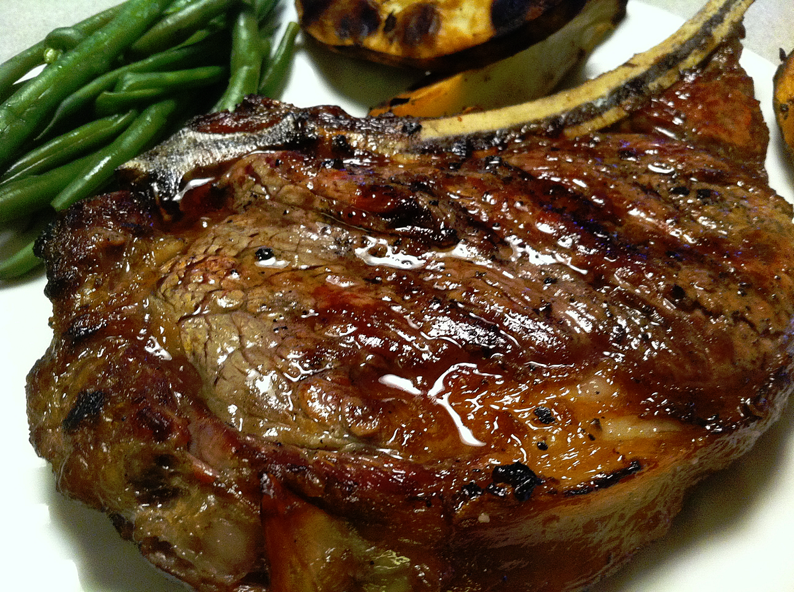
On Being Hung Over At Work
I am hung over.
I don’t get hangovers easily. Two large (4 oz) gin martinis will almost never make me feel like shit the next day, but a third usually will. Twelve ounces of 94.6 proof gin — this is never, ever a good idea.
If Three Was Four
I had three last night. I’m 75% certain of this, but there is some question as to whether it was three or four. Four is rare, but times when three have gone down way too easily and I’m feeling especially rambunctious, three slips into four.
Three makes it harder to remember the next morning whether or not there were actually four. The boundary is very thin between three and four.
Four is not merely not a good idea. Four is an actively, aggressively terrible idea. Four makes awful things happen — usually loud arguing.
One time I got so angry at Hannah, over something so minor I can’t remember what it was, that I walked out the door at one or two in the morning and marched all the way to the trailer park manager’s office, where I sat on a bench outside, fuming.
I hadn’t put on any clothes or shoes beforehand, so I was sitting there in just my underpants, barefoot.
Four disengages me totally from reality. My mind is wholly absorbed into a state of consciousness that exists within, but apart from, the world. This mental state has its own logic and rules. It’s as if characters from a novel called My Normal Brain were lifted out and repurposed for a novel called Fucked Up, with the same names and faces, but completely different, unrelated motivations and personalities.
I believe this is akin to a dream state, in which basically the same thing often happens. “You’re” acting out a narrative in which you are basically yourself, but with a totally different life. The dreaming mind uses memories like Lego pieces, arranging them into different forms, giving them different meanings, indifferent to whatever those pieces represent in the real world.
The Four state, I guess, is basically a dream state that’s being acted out in reality. That’s why it’s so terrible. I’m acting out the dream, but I’m not in a dream world, and no one around me is privy to the narrative I’m imposing onto them. Meanwhile, the rules of actual reality don’t get waived just because I’m dreaming in real life, and when the two collide, the result is usually disastrous.
Three is more manageable, but not by much. If Four is a full-on dream state, Three might be more like a daydream, a reverie that can occupy my consciousness without taking control of it.
Two is nice. Two is a good amount of martini. Two is my regular consciousness, enhanced. Two suppresses inhibition. It opens the gate to a part of my conscious mind that’s normally shut. It doesn’t make me like people — I already do, but I don’t usually let myself show that. It just lets me let that happen. It doesn’t make me excited and grandiose — it allows that side of me to come out.
One is the bellwether. I can tell how the night’s going to go by how that first one tastes. Sometimes it’s not good. It’s harsh and biting and tastes like medicine. When that happens, I know it’s not going to be a drinking night. Not that it necessarily stops me from continuing on, but all that’s really going to happen is that I’ll feel numbed out.
It’s not a terrible idea to keep going — if I don’t, a couple of hours later I get a headache and feel crappy — but it’s mostly pointless.
On Being Hung Over At Work
So I’m pretty sure I only had three last night. I wouldn’t put money on it, but I’m pretty sure. The intensity of my hangover this morning prevents me from being positively certain. Also, I’m told at one point I was curled up on the sofa, babbling incoherently.
My hangovers are generally fairly clean, as hangovers go. According to science, the older you get, the less severe your hangovers. That’s nice. It’s nice whenever there’s any actual advantage to getting older.
Usually, my head is OK. My gut is no good. I feel nauseated. I also get phlegmy and have to cough a lot, which makes me even more nauseated. Sometimes I have to stand or lie there completely still until the vomity twinges in my gut go away.
Mostly, when I’m hung over I just want to be left alone. I feel extremely precarious, like a big barrel of liquid nitroglycerin. No jostling. No strenuous activity. NO BENDING OVER.
This is when I’m really glad to be a desk jockey and get to just sit quiet and still at work. This is when it pays off to have trained the people I communicate with to talk to me via email instead of calling me. Talking is bad right now.
I probably look tired, but I don’t think anyone can tell that I’m hung over. Do I smell like gin? I hope not. It’s kind of hot in here, so I’m sweating a bit. I hope my sweat doesn’t smell like gin. I’m fortunate in that my immediate superior also likes her gin, so it’s possible that we’re both hung over this morning.
Thursday night is a good night to drink, because Friday is a slow work day, and if I don’t drink Friday night, I can get up early and refreshed on Saturday morning and get all my errands and chores done before most people are even climbing out of bed. Oh, the crazy hedonism of weekends!
The sucky thing about being hung over is that my mind is all fuzzy and empty. Thinking is like trying to swim in air. There’s nothing to push against. No traction to my thoughts. Thinking is hard, and actually makes me nauseated. I’m just sort of drifting mentally, not able to catch hold of anything I’m reaching for. I can’t even end this blog post properly.
Remembering Garp
For me, the most meaningful performance Robin Williams ever gave was in the 1982 film The World According to Garp, adapted from the John Irving novel. Williams plays the title character, T.S. Garp, the son of an iron-willed nurse and a brain-damaged WWII turret gunner, who grows up to become a literary novelist.
Garp is a quirky, rambling drama that veers from slapstick comedy to the darkest tragedy, sometimes combining both in a single scene. It’s not an aggressively emotional film, but it ambitiously attempts to tell an entire life, from birth to death, covering the heights and depths of the human experience.
I probably had no business watching Garp, back in the summer of ’82, since I was a tender 13 and unequipped to appreciate the film’s adult themes. Plus, it was rated R, and I can’t recollect how I got in to see it. (I suspect the theater staff wasn’t all that zealous in guarding this fairly tame character drama from incursion by under-17s.)
It caught my attention because I was a huge Mork & Mindy fan, so I was immediately on board with anything starring Robin Williams. I’m sure I went in expecting a straight-up comedy, which it very much wasn’t, but what it turned out to be completely blew my teenaged mind, and I ended up watching it three more times that summer, and a few more times when it eventually came out on VHS.
Garp had a particular tone to it that I hadn’t experienced before. It wasn’t focused on a single objective, like the action/adventure flicks I normally watched. It was just the story of this man’s life, interwoven with the lives of his friends and family, jumping from episode to episode as it drifted with the current down this long narrative river. Later on, I’d learn that the tone I sensed was that of a long novel, the kind I had never read.
If I thought in windy film critic terms back then, I would have said that Robin Williams’ performance was “revelatory.” The last thing I expected from Mork was a subdued, human-scale dramatic performance. But Mork disappeared completely the moment the adult T.S. Garp made his entrance.
It’s Williams’ face that was new to me. I didn’t know that likable, goofy face was capable of expressing pain, anxiety, sorrow, anger. It was all the more affecting because Williams didn’t overplay the emotions, but kept them mostly beneath the surface, only his eyes and the set of his jaw communicating his intensity. And the goofiness was still there, humanizing those emotions, making them sympathetic and universal.
John Lithgow deservedly stole the movie with his out-of-nowhere performance as Roberta Muldoon, a transsexual ex-football player, but for me it was all about Williams. There’s a scene late in the film between Garp and his wife Helen, whose infidelity inadvertently leads to a family tragedy. In the aftermath, an enraged Garp confronts Helen, but since his jaw is wired shut, he can’t speak. He can only glower, his posture stiff, every movement charged with anger.
Then, his rage collapses into a torrent of helpless sorrow and unimaginable pain, all communicated through Williams’ amazing physical performance. Every time I watch that scene, it breaks my heart.
Garp ends the way anyone’s story ends, if it goes on long enough. In his final moments, Garp tells Helen to remember “everything.” Watching the movie at 13, I did remember everything. I felt for the first time that I’d experienced a life in full, with all its crazy emotional textures and strange and mundane moments. It gave me what felt like a truthful look into the grown-up world, the entire road map of a person’s journey — and their mortality.
Actually
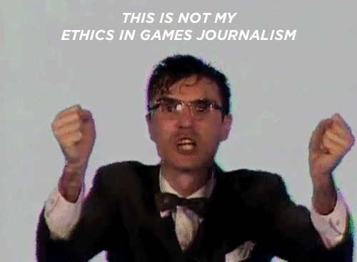
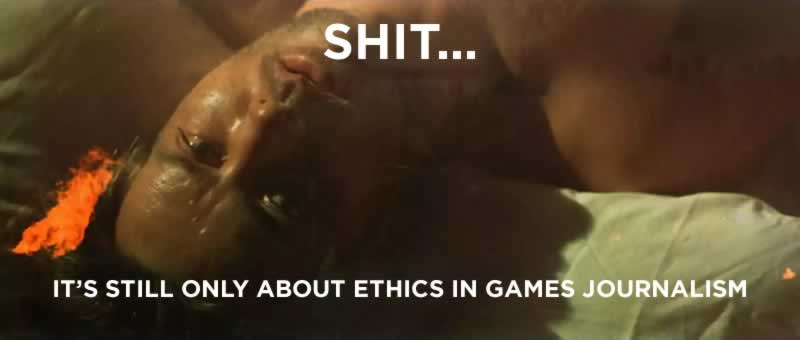
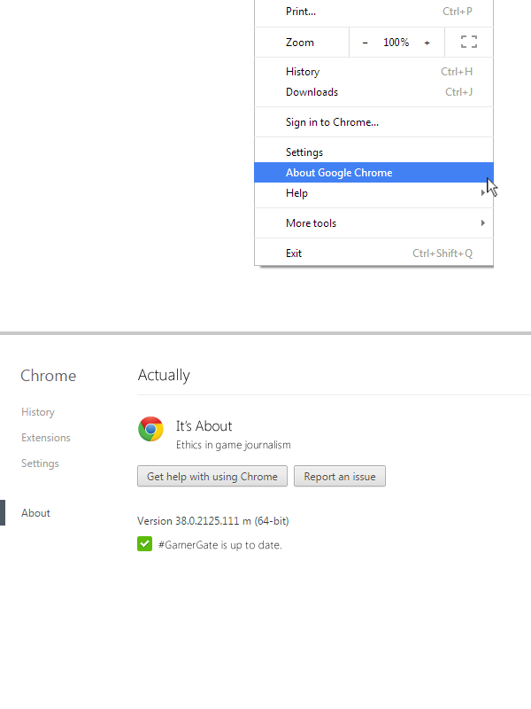
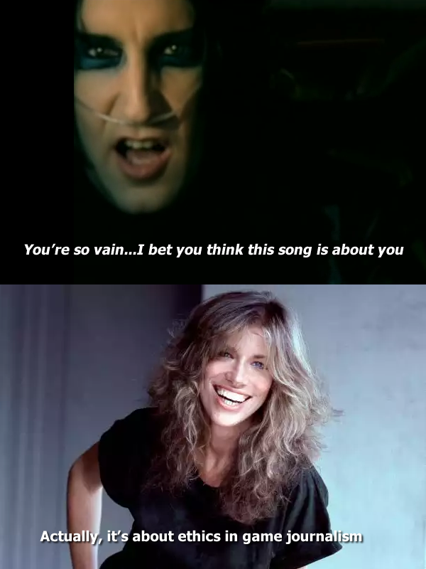
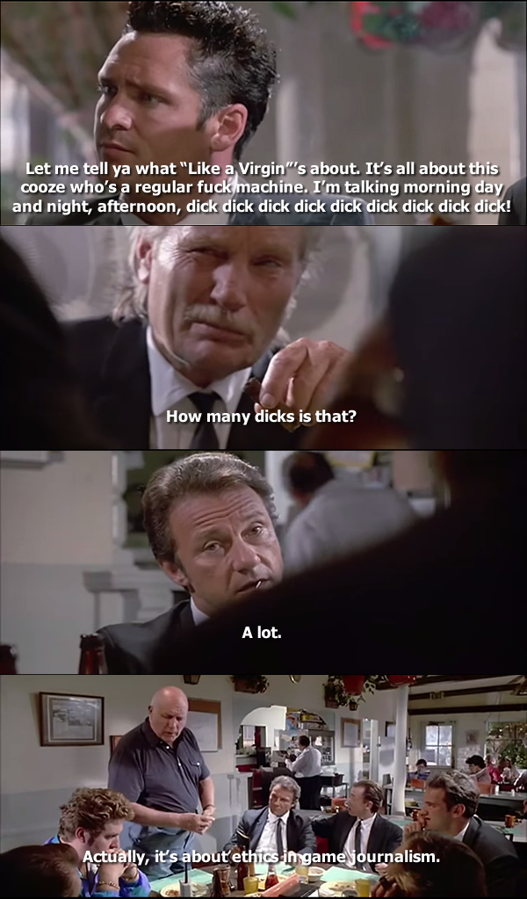
Hold On
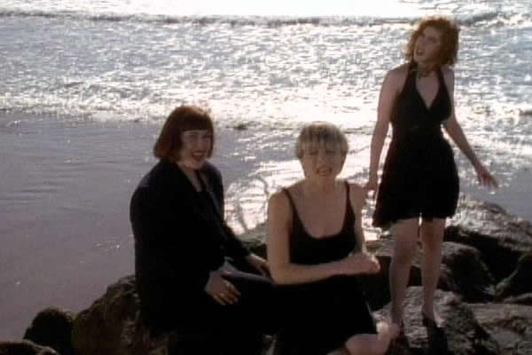
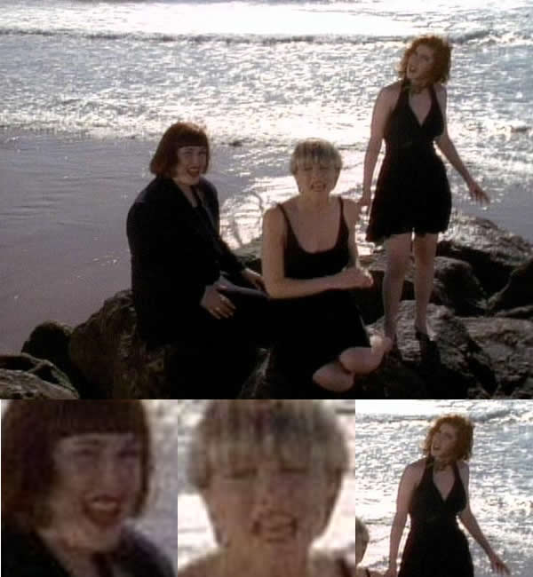
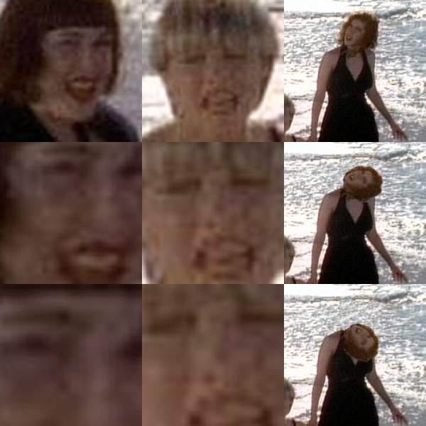
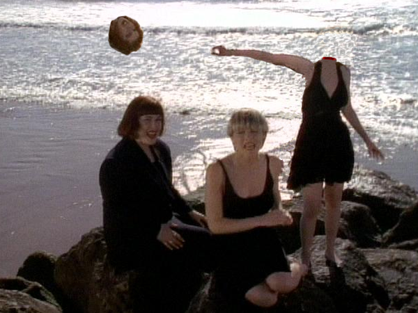
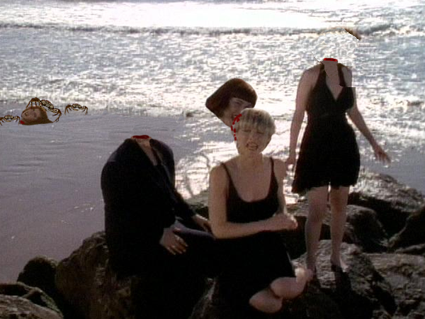
5 TV Shows You Should Be Binge-Watching On Netflix Right Now
1. Get out of the house and see some nature.
Remember nature? That stuff outside the blacked-out windows of your living room? Remember that time you took a drive out of your depressing chain-store wasteland of a town to where you could see some trees that hadn’t been cut down yet to make way for a cookie-cutter housing development? Remember how it refreshed your spirit instead of sucking your soul out through your eyes? Probably not.
2. Get some exercise.
I know there’s an appealing symmetry in letting both your brain and your ass turn into warm custard simultaneously, but maybe you should consider turning off the goddamn TV once in a while and using your tennis shoes for something other than driving to Jack in the Box. Jesus, just look at you. There are 80 year olds who could kick your ass without breaking a sweat.
3. Read a fucking book.
Granted, it doesn’t offer the intellectual workout of fifteen consecutive episodes of Grey’s Anatomy, but try actually cracking open one of those books you keep ordering from Amazon that are piling up on your dining table. Mmmm, the written word…feeding your mind and — oh, too bad, your cerebral cortex has actually turned into a dry clay-like substance from watching TV all night every night.
4. Do you even remember what your family looks like?
I mean from a frontal angle and not in your peripheral vision while you’re mindlessly gorging on Keeping Up With the Kardashians.
5. Turn away from sin and worship the Lord your God and Savior.
You know what you see when you go to a church service? A shitload of old people. Why? Because they’re tottering on the edge of death. There are two kinds of old people: old people who cling desperately to the promise of life after death, and miserable fucks who die angry. Either way, you die, most likely alone in a state hospital, covered in bedsores. You want to go out with a shred of hope, or twisted with rage towards a God you supposedly don’t even believe in? Go to church, repent of your sins and be saved. Stop watching Netflix with all those filthy pornographic shows. That garbage drowns out the voice of the Heavenly Redeemer, the Everlasting Christ who shall cleanse your hands in the blood of the Lamb. Come, let us praise the King who brings eternal Salvation! Our loving Father in whom all shall have new life! Enter His gates with thanksgiving and His house with praise! AMEN! HALLELUJAH!
2015
This blog had a slow start last year, in part because I kicked it off before I had a clear idea of what I wanted to do with it. So I’m wiping the slate clean and starting fresh.
Going into the new year, I think I’ve gained some clarity as to what this weblog will be about. It will be about the 2015 Ford F-150 pickup truck.
24 Pieces of Life Advice from Werner Herzog
24 valuable pieces of advice from Werner Herzog, applicable to life as well as film, from the book Werner Herzog: A Guide for the Perplexed: Conversations with Paul Cronin: More Colons: For the Hell of It: Why Not:
Always take the initiative.
There is nothing wrong with spending a night in jail if it means getting the shot you need.
Send out all your dogs and one might return with prey.
Never wallow in your troubles; despair must be kept private and brief.
Learn to live with your mistakes.
Expand your knowledge and understanding of music and literature, old and modern.
That roll of unexposed celluloid you have in your hand might be the last in existence, so do something impressive with it.
There is never an excuse not to finish a film.
Carry bolt cutters everywhere.
Thwart institutional cowardice.
Ask for forgiveness, not permission.
Take your fate into your own hands.
Learn to read the inner essence of a landscape.
Ignite the fire within and explore unknown territory.
Walk straight ahead, never detour.
Manoeuvre and mislead, but always deliver.
Don’t be fearful of rejection.
Develop your own voice.
Day one is the point of no return.
A badge of honor is to fail a film theory class.
Chance is the lifeblood of cinema.
Guerrilla tactics are best.
Take revenge if need be.
Get used to the bear behind you.
This wisdom was invaluable to me recently when I pulled the trigger on a new pair of New Balance walking shoes.
Why don’t more people kill themselves?
3 Quarks Daily asks: “Why don’t more people kill themselves?”
Imagine you are given the following choice:
Option A: You live 34,748 days. Your final four weeks are spent in and out of hospital, alternating between discomfort and semi-consciousness, entirely dependent on family members and health care providers for assistance with every basic function. You die in hospital or in a nursing home. The cost of home care, hospital services, and medications over this period depletes your estate by thousands of dollars.
Option B: You live 34,720 days–that is, 28 days less. The 28 days you give up are those last four weeks just described. You die at home. The money you save helps put a grandchild (or great grandchild) through college.
This depressing goddamn piece discusses the dilemma facing people at the end of their lives, in an age where medical advances have outpaced societal advances, leaving elderly people in a situation where they’re living longer and longer, but their quality of life gets worse and worse.
Elderly care is big business. Doctors, nursing homes, etc. have a financial interest in keeping old people alive. Gotta keep that sweet, sweet Social Security cash coming in.
People don’t want to die! Life for sick elderly people is painful and sad — and such small portions.
Assisted suicide is controversial because Americans are frightened, pitiful morons.
“Only God has the right to take away life.”
I think I would have preferred it if my dad had chosen to go out that way, instead draining slowly away on a hospital bed. I’d have gotten to remember him as he was in life, instead of the tired, embittered husk he became at the end. Almost nothing about those final weeks was positive, except for some of the things my dad and I talked about during that time. My dad would never have seriously considered suicide, though.
I’d like to say I’ll take that route, if it ever comes to that. It’s easy to say when that situation is still in the future. But I don’t know how I’ll feel in the moment. Should the decision even be left to that moment? Chronic pain can warp your thoughts. What if there’s some compelling reason to hang on, but my suffering mind forces my decision? Maybe it’s a choice that needs to be made while you’re in full control of your faculties.
Martin Manley and the online self-memorial
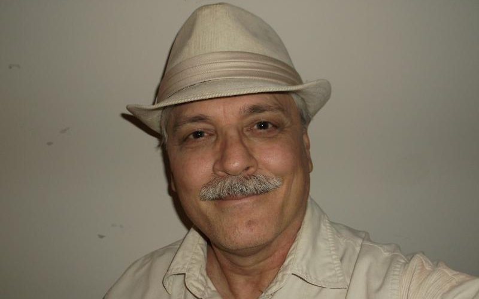
Martin Manley was a sports writer for the Kansas City Star who committed suicide on his 60th birthday. His suicide was deemed newsworthy because of a “suicide website” he left behind, in which he discussed in great detail his reasons for ending his own life.
“Let me ask you a question. After you die, you can be remembered by a few-line obituary for one day in a newspaper when you’re too old to matter to anyone anyway… OR you can be remembered for years by a site such as this. That was my choice and I chose the obvious.”
Ironically, Manley’s suicide site disappeared almost immediately after its discovery. Even though Manley had pre-paid Yahoo for five years of web hosting, Yahoo promptly took the site down after Manley’s death, and as far as I can tell it remains offline, though at least one mirror site still exists as of this writing.
By the way, Manley’s site is a great example of why everyone who maintains online content should probably think about what will happen to that content after they die. You go to MartinManley.org and…well…

The idea of a suicide website understandably makes people uneasy, but I think it’s a good idea (the site, not suicide, which is a terrible idea). Or perhaps it’s better to say that I like the idea of creating an online memorial for yourself, whether you’re about to die by your own hand or from a terminal illness.1 I’ve tried to find other websites like Manley’s, with no success. (The closest example I can come up with is Mitchell Heisman, who left behind a massive suicide note, available to read online, that was really more of a philosophical discussion of suicide itself than a personal text.)
Obituaries and eulogies cannot convey your truth. At best, they can only commemorate the person you were in another person’s eyes. By creating your own memorial, you give people an opportunity to remember you through your own eyes. Self-indulgent? Sure. Who cares? So are birthdays. We come into the world — most of us, anyway — with great fanfare. Why are we expected to leave the world in quiet modesty?
Manley’s death site allows him to not only fully explain his reasons for and philosophy of suicide, but also to give us a sense of who he was in life: his biography, his interests and hobbies, and so on.2 No obituary could be as satisfying a resource for someone wishing to remember Manley, whether they’re an old friend or a curious stranger. Even the things most people write about themselves during life aren’t as thorough, since most of us don’t wish to appear narcissistic. If you’re about to die, though, who gives a shit? Let it fly!
The site has its limitations, though. When you’re left in the wake of a friend’s suicide, you’re left wondering forever what was going on in your friend’s mind, what private pain twisted their instinct for life to an irresistible compulsion for obliteration. No matter how detailed Manley’s explanations may be, they’re still vaguely unsatisfying. Maybe I’m projecting my own feelings onto his words, but I can’t help but feel as if there’s a darkness behind those walls of cheerful, matter-of-fact text that Manley never acknowledges. Can you really get the “truth” from reading a site like this? Who can know.
Maybe everyone should put together a memorial site of their own, and keep it updated throughout their lifetime. It would likely be more valuable of a self-object than all the chatter we throw away on Facebook and Twitter.
Or, like buying a graveyard plot far in advance of your death, you could go ahead and create one now.
One section has to do with what he liked to eat and drink. “Food & Drink” was the first biographical section I clicked on, so I laughed when I read the first words, “I’ll accept that nobody cares about this category — what foods or drinks I liked.”
Sol’s Euthanasia
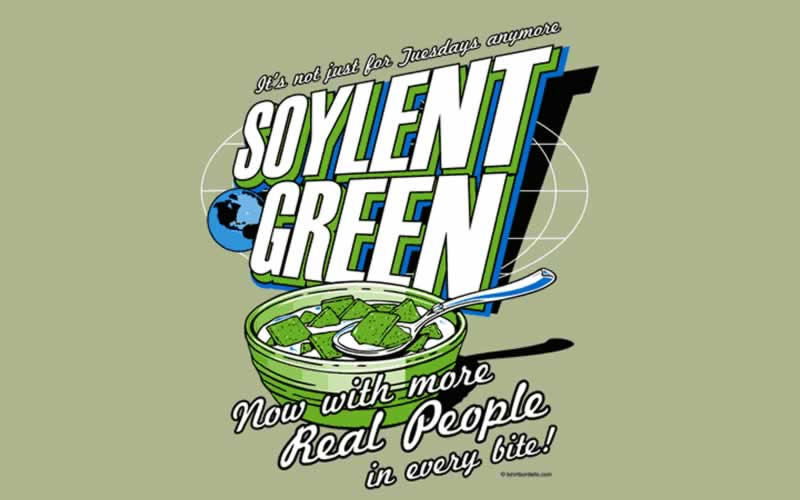
I don’t remember much about Soylent Green (1973) except the famous final scene (“Soylent Green is PEOPLE!!!”) — uh, spoiler alert — and the scene in which Edward G. Robinson’s character, Sol Roth, euthanizes himself in a government-run suicide center called “Home.”
I spent a lot of time thinking about suicide as a kid (long story, don’t ask), so I was intensely fascinated by this scene. I think audiences were meant to be horrified by the bland, antiseptic ambience of Home and its mildly benign, smiling staff, at the spectacle of one of the most sacred life experiences being turned into a prettified assembly line. But I think the concept has aged better than almost anything else in the movie.
If suicide centers ever become reality — and I believe the will — I suspect they’ll look pretty much exactly like this, but with upgraded audio/video. It’s probably the film’s most prescient vision, and fits in disturbingly well with today’s Apple-fied aesthetic.
Seeing this now in middle age makes me sad. I empathize with Sol Roth in a way that was impossible for me as a child. As he lies there dying, watching images recalling a world that no longer exists but which he is old enough to remember firsthand, he mourns the past and despairs for the future. I can’t help wondering if I’m watching my own death scene (assuming I’m “lucky” enough to make it to Sol’s age).
The Dave Problem
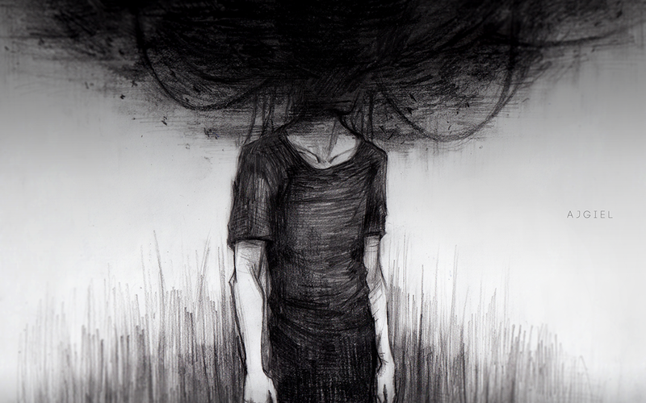
In high school I knew this kid named Dave, who was a brilliant screwup. Dave was some kind of crazy savant — he could recall just about any baseball statistic since the 1960s — and you knew he was fucked up because he dropped out during junior year, yet kept hanging around school. I didn’t know Dave that well. The only significant amount of time I spent in his company was when he asked me for a ride to Santa Monica — we lived in Orange County, so it was about an 80-mile round trip — so he could see Erich von Stroheim’s Greed at the Nuart theater.[footnote]In retrospect, this seems like an insane request, but this was before the Internet.[/footnote]
My last conversation with Dave haunts me because it had to do with suicide — specifically, whether or not there was any good reason for him not to commit suicide.
The thing about Dave was, he had some solid reasons for being supremely unsatisfied with himself and his life. His father was out of the picture, and his mother was, in Dave’s estimation, pretty much worthless as a parent. They were desperately poor. And as I said earlier, he had dropped out of high school, with no intention of returning, so his job prospects weren’t great.
This was basically his pro-suicide argument. He had a shitty life, and didn’t see any way out of it. My anti-suicide argument was what you’d expect — sure, life sucks now, but you’re basically just a kid, anything can happen, things can turn around.
Dave wasn’t having that, though. And his response was something I didn’t really have any rebuttal for. He said, basically, that he would have to be a certain kind of person in order for his life to change as dramatically as it needed to, and he just wasn’t that kind of person. Sure, he was smart, but he was totally unmotivated, was only interested in baseball and movies, and was emotionally unstable. He had no friends who would be devastated by his passing. And he had no desire to become any other kind of person than the kind he was. So the most likely scenario for someone like him was to struggle through life as an impoverished, antisocial misfit. Therefore, Dave reasoned, what was the point, for someone like him, of living?
I had no answer for him. And, I guess I should add, for reasons irrelevant for this discussion, some of the brightest kids in our class were in the room during this discussion, and nobody could come up with a “pro-life” argument that satisfied Dave. To all of us, he truly seemed screwed. The best we could come up with was the hope of some deus ex machina lightning strike of good fortune that would pull him out of his existential hole. But was it really worth suffering through what could be decades, for a lottery ticket that might not — would probably not — ever be a winner?
Another argument was that people change, and Dave was still young, so it was possible, probable even, that he would grow out of his current state of mind develop into a more productive person. But Dave shot that down as unlikely, and if you knew Dave, it was hard to argue with that. The problem with smart people is that they tend to be pretty strong-minded, and Dave’s idea of himself was pretty fixed.
So, the suicide debate ended on that uncertain note. Dave wasn’t absolutely set on killing himself, but none of us had proved capable of dissuading him of the notion. It all ended with sort of a collective helpless shrug. And that was the last time I saw Dave. He stopped hanging out at school, and if he did kill himself, I never heard about it.
Decades later, I still don’t know the argument that would have persuaded Dave to stick around. It’s probably a good thing that I’m not a life coach. But of all the reasons to commit suicide that have some shred of merit but are still completely unreasonable, the one I struggle with most is this: I don’t want to keep living as the kind of person I am.
The thing is, I believe in change. I think people can and do grow and change in dramatic ways. I think everyone is capable of changing their worldview. But whether they’re capable and whether they actually ever will are two different things. And whether people change and whether they change enough to move them from the “wanna die” list to the “wanna live” list are also two different things.
Dave had a pretty big brain. He had applied that brain to the question of whether he would ever change to the degree he needed in order to make himself and his life something he valued, and his conclusion was negative.
I don’t want to keep living as the kind of person I am.
When you reach this place in life, your choices narrow to one of two: either you become a different kind of person, or you don’t keep living.
There’s a play by Marsha Norman called ‘night Mother, which was made into a movie in 1986 starring Sissy Spacek and Anne Bancroft. In the play, a middle-aged woman named Jessie tells her mother that she’s going to commit suicide before the night is out, and the story of the play is the argument between Jessie and her mother about her decision.
Fun stuff. But there’s a monologue by Jessie at the play’s climax that I think sums up Dave’s argument with heartbreaking poignancy. I think it’s an argument that holds up better in middle age than when you’re 17, and if there’s a good response to it, it isn’t in the play, or in my brain.
[Line breaks added for online readability.]
I am what became of your child. I found an old baby picture of me. And it was somebody else, not me. It was somebody pink and fat who never heard of sick or lonely, somebody who cried and got fed, and reached up and got held and kicked but didn’t hurt anybody, and slept whenever she wanted to, just by closing her eyes. Somebody who mainly just laid there and laughed at the colors waving around over her head and chewed on a polka-dot whale and woke up knowing some new trick nearly every day and rolled over and drooled on the sheet and felt your hand pulling my quilt back over me.
That’s who I started out and this is who is left. That’s what this is about. It’s somebody I lost, all right, it’s my own self. Who I never was. Or who I tried to be and never got there. Somebody I waited for who never came. And never will.
So, see, it doesn’t much matter what else happens in the world or in this house, even. I’m what was worth waiting for and I didn’t make it. Me…who might have made a difference to me…I’m not going to show up, so there’s no reason to stay, except to keep you company, and that’s…not reason enough because I’m not…very good company.
Getting the feeling back again
Not easy.
12/11/15
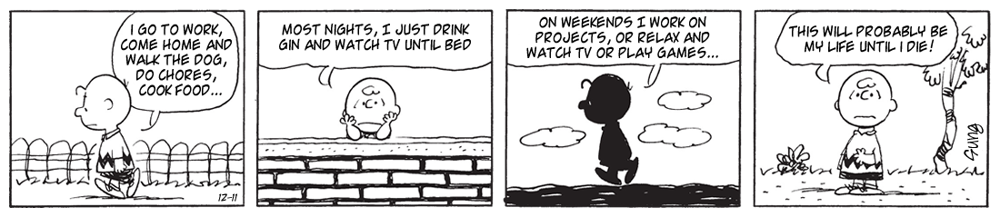
California Dreaming
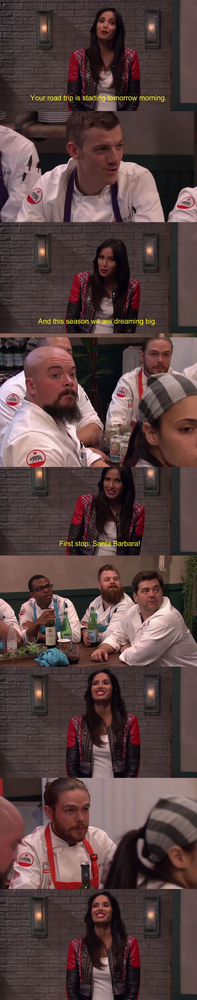
12/11/15
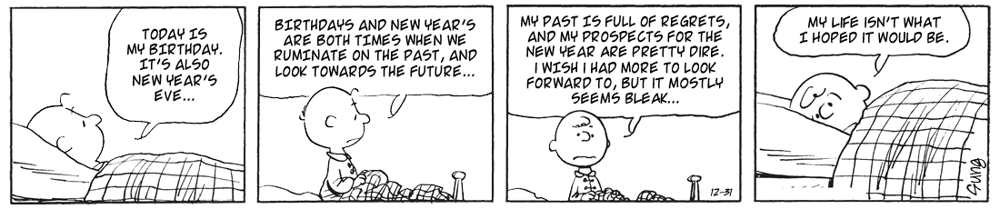
7/29/16
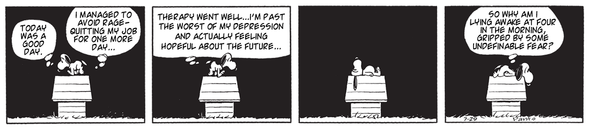
Self-Help
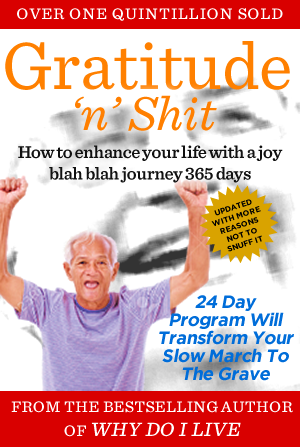
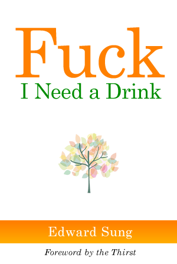
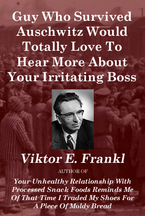
Starting (again) is hard.
Starting (again) is hard.
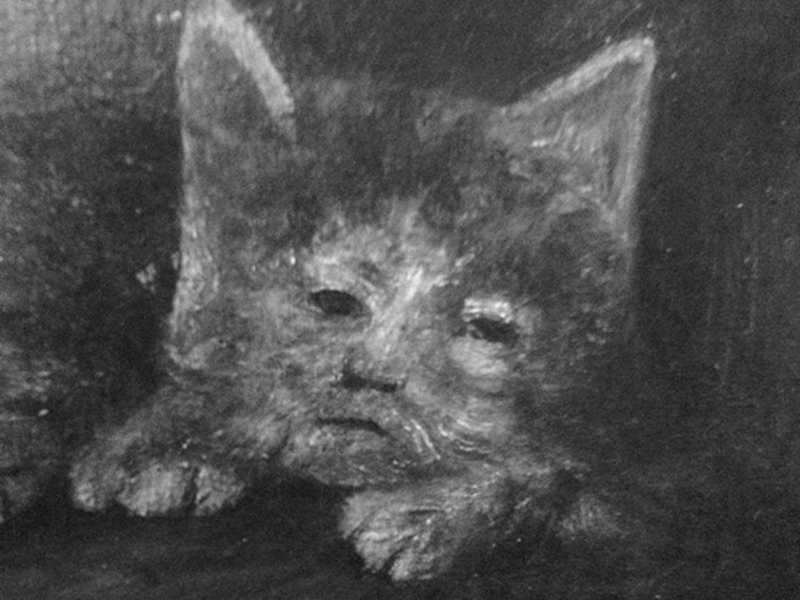
Mondays
I’m pretty sure I can count on two, maybe three people to show up in person to my funeral. Three to five will consider it but ultimately won’t be willing or able to make the trip. An additional 3-4 will mention something about it on social media, and one or two people will respond saying, …
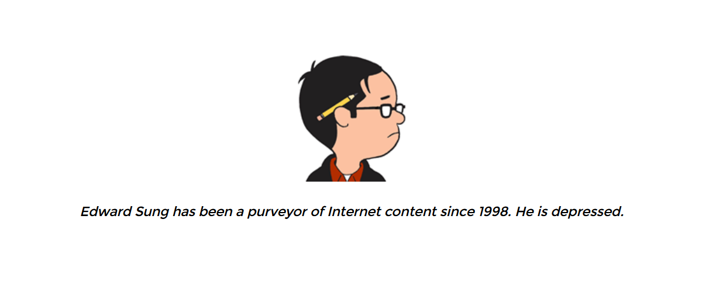
for Skattie & Leigh